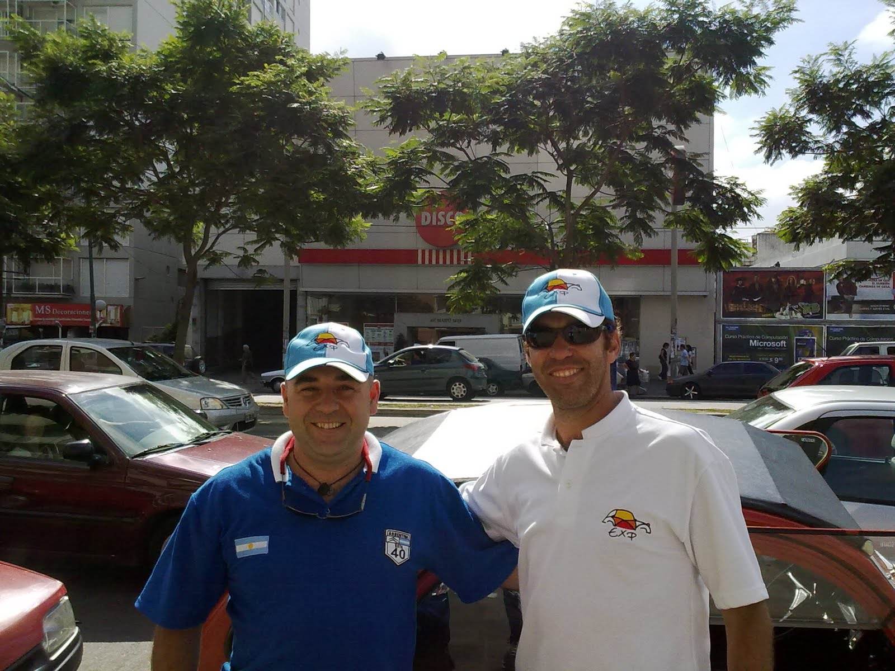

Después de muchos preparativos y ansiedades, llegó el tan esperado dia.......
La comitiva partió de Ituzaingo rumbo a Vicente López, para pasarnos a buscar.
Desde ese lugar tuvimos una calurosa despedida por parte de mi hermano Felipe Franzosi, quien se sumara al Tour de Bicentenario por tierras Tucumanas.
Las Citronaves están escoltadas por un Flamante Modelo C3 que gentilmente no cedió Citroën Argentina como muestra de apoyo al recorrido que sus legendarias creaciones realizan. En el viajan Fernando Barcena y Agustin Izquierdo.
La Caravana esta encabezada por el Mítico 3CV All Black, que fiel a su tradición rutera y su espíritu de duro, va abriendo camino. En el Viajan Jose Izquierdo y Paulina, nuestra fotógrafa oficial. Lo sigue el 3CV Principito que con su andar señorial y cambios suaves, da cuenta de esa sangre real que corre por su motor. Aquí viajamos Martín Franzosi y yo, Ricardo.
Por último, como buena dama que es, viene el 3CV Mafalda, que con sus guardabarros recortados nos muestra sus piernas y con ese andar femenino que se hace esperar, nos informa que no hay dudas de su determinación por llegar. En el Viajan Alfredo (el Vasco) con su hijo Pablo.
Al momento de escribir este informe nos encontramos en el Km.90 de la ruta 34, disfrutando de un rico mate y una deliciosa pastaflora que tan gentilmente nos prepararon para cada auto la familia de Fernando......un grande!!!!
Los mantendremos informados.........!!!!!!! Ver algunas fotos
A toda la gente de Experiencia 3CV Suerte!! y muy buen viaje!!